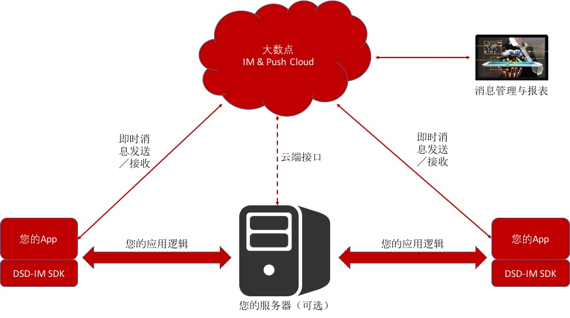

大数点IM&Push云服务简介
大数点即时通信与推送服务云基于大数点Erlang分布式计算架构实现，并基于爱立信Mobile optimised congestion control algorithm（https://github.com/Dasudian/scream）优化了TCP传输信道，让数据传输更佳适合移动通信网络和其他物联网络adHoc和不稳定的特征，让数据传输更稳定。
平台提供的是一个多租户用户体系，多租户是指软件架构支持一个实例服务多个用户（Customer），每一个用户被称之为租户（Tenant），软件给予租户可以对系统进行部分定制的能力，如用户界面颜色或业务规则，但是他们不能定制修改软件的代码。在大数点云即时通信云服务体系中，不同机构之间的用户数据相互隔离，同一个机构下不同app之间的用户数据相互隔离。
大数点即时通信与推送服务云基于Erlang轻量级进程的高并发特性并结合大数点优化的Erlang Linux容器镜像，保证每一个消息传输都在毫秒级内完成，并且高度稳定。
大数点即时通信云服务提供了Android、iOS和Linux的SDK，对移动设备和物联网嵌入式设备的资源调度做了优化，减少对电量的消耗；同时，所有消息的数据传输都为精简的二进制格式，降低了对网络带宽的消耗。所以，除了适合移动互联网应用使用之外，更佳适合物联网设备和应用所处的资源有限和不稳定环境。
除了以上特征之外，所有数据传输都基于SSL加密信道，客户端接入大数点即时通信云时都需要得到云端的严格认证，保证每条消息传输都是端到端的安全保障。
大数点IM&Push云的功能特征
- 支持单对单聊天、点对点消息发送
- 群租功能与群发消息
- 后台提供推送功能
- 支持对所有客户端的广播
- 支持离线消息
- 配合大数点的云存储服务或其他云存储服务实现多媒体即时消息（发送多媒体文件的URL）
- 云端报表功能，分钟级实时统计，开发者可以随时查看用户或客户端使用情况
集成原理

如上图所示，根据您的应用平台（如Android、iOS、Linux等）下载相应的SDK，并根据SDK的接口文档调用相应的API实现初始化、消息发送、接收、建立群组等功能，所有的消息传输都由大数点云完成，不需要占用您自己的服务带宽，且大数点的云端能力会根据用户的增长自动扩展，保障大规模并发能力和数据传输的高实时性。您的服务端也可以通过调用云端API实现对用户终端的消息推送。